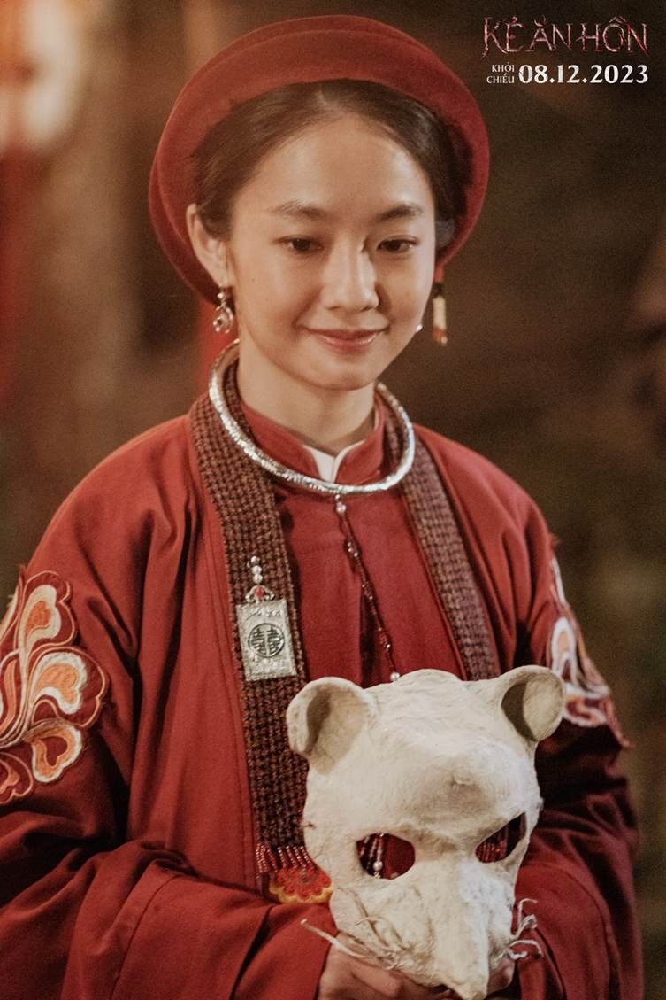
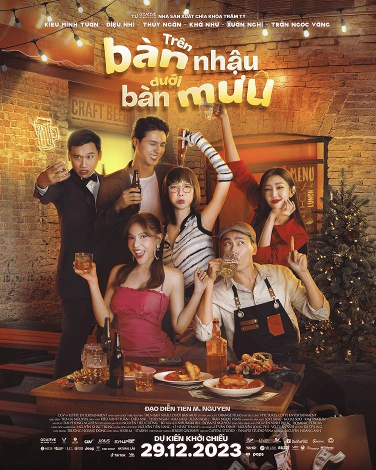
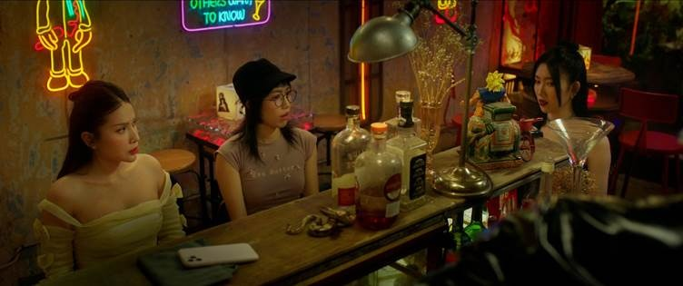
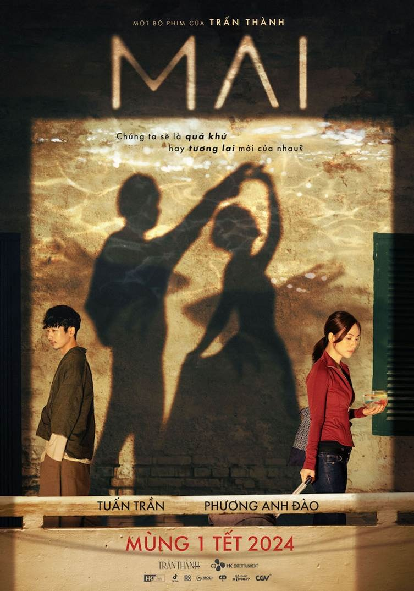
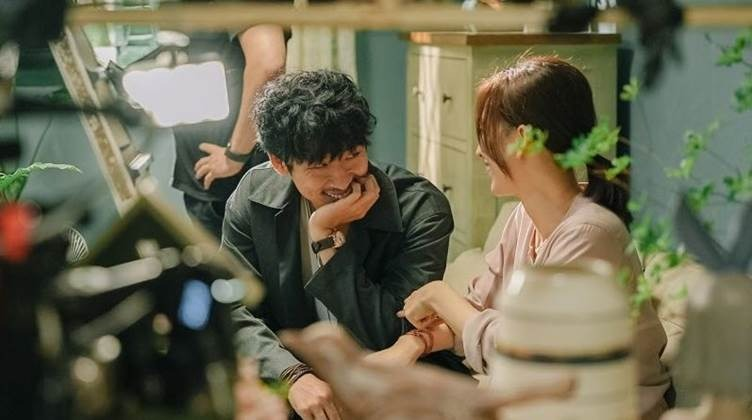
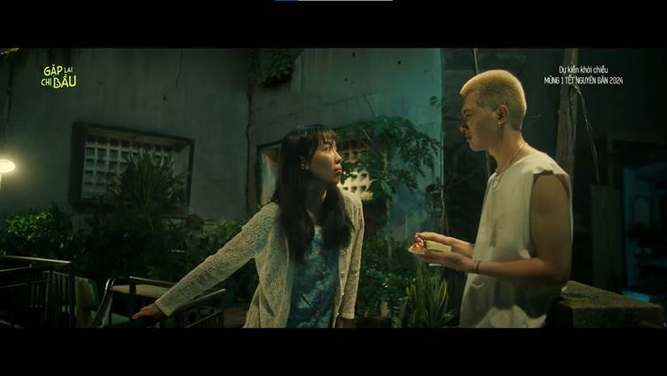

Tin Tức
TIN ĐIỆN ẢNH
-
TUYỂN DỤNG
Các tựa phim Việt đáng chú ý dịp cuối năm 2023
Phim kinh dị Kẻ Ăn Hồn
Được phát triển từ tập phim "Rượu Sọ Người" trong series kinh dị gây sốt thời gian vừa qua Tết Ở Làng Địa Ngục, Kẻ Ăn Hồn là phim Việt rất được khán giả chờ mong dịp cuối năm. Phim có sự tham gia của dàn diễn viên kết hợp giữa cả các gương mặt gạo cội và các diễn viên trẻ như Võ Điền Gia Huy, Hoàng Hà, Huỳnh Thanh Trực, NSƯT Chiều Xuân, Nghệ sĩ Viết Liên...
Kẻ Ăn Hồn sẽ kể câu chuyện về Làng địa ngục thời sơ khai cùng cổ thuật "rượu sọ người". Loại vu thuật này vốn mang lại sức mạnh cho những ai luyện nó, kẻ luyện rượu sọ người sẽ sở hữu sức mạnh có thể chiếm hồn đoạt xác, điều khiển âm binh, hồi sinh vong quỷ.
Hoàng Hà - nữ diễn viên đang được yêu thích với vai diễn trong phim truyền hình Chúng Ta Của 8 Năm Sau và từng là "nàng thơ" Dao Ánh trong Em Và Trịnh sẽ thủ vai chính - Cô Phong - của Kẻ Ăn H ồn. Cô Phong là một cô gái trẻ với khả năng nhìn thấy những vong hồn ma quỷ và khám phá ra những điều khủng khiếp xung quanh Làng Địa Ngục.
Phim gây chú ý không chỉ bởi truyền thuyết quỷ dị về các tà thuật cổ xưa, mà còn tái hiện trên màn ảnh bầu không khí quỷ dị, ma mị đầy lôi cuốn, cũng như kết hợp các yếu tố văn hóa dân gian Việt như áp phích phim với chủ đề "đám cưới chuột" từng gây sốt. Kẻ Ăn Hồn sẽ chính thức ra rạp từ ngày 15/12 với suất chiếu sớm từ 18h ngày 14/12, là tựa phim kinh dị tiêu biểu cho dịp Lễ Giáng sinh năm nay.
Phim hài Trên Bàn Nhậu Dưới Bàn Mưu
Dịp Tết Dương lịch, ba kiều nữ điện ảnh Việt Diệu Nhi - Thúy Ngân - Khả Như sẽ "đại náo" phòng vé trong phim hài Trên Bàn Nhậu Dưới Bàn Mưu. Vào vai ba cô bạn thân với những tính cách khác biệt, ba nữ diễn viên sẽ cùng tạo nên một phi vụ "lầy lội" nhất màn ảnh.
Trong hành trình tìm kiếm những ước mơ và kế hoạch cuộc sống, ba cô bạn đã vô tình bị kéo vào một âm mưu đen tối ngoài ý muốn. Sự vô tri của Gạo (Diệu Nhi), sự hậu đậu của Du Lai (Khả Như) và sự nóng nảy của Triệu (Thúy Ngân), kết hợp cùng những sáng kiến bá đạo của Trí (Kiều Minh Tuấn), đã mang đến một màn "trả thù" có một không hai dành cho Trực (Trần Ngọc Vàng) - một tên siêu lừa đội lốt doanh nhân và cũng là kẻ khiến cho Gạo gặp nhiều khốn đốn...
Trên Bàn Nhậu Dưới Bàn Mưu sẽ mang đến bầu không khí sôi nổi, vui vẻ, đậm chất tuổi trẻ để thưởng thức trong những ngày cuối năm và đón năm mới. Phim dự kiến ra rạp vào ngày 29/12/2023 tới.
Phim tâm lý - tình cảm Mai
Tròn 1 năm, Trấn Thành sẽ trở lại với vai trò đạo diễn vào mùa Tết này trong Mai, một phim điện ảnh thể loại tâm lý, tình cảm. Sau teaser trailer, dàn diễn viên chính của Mai đã được hé lộ với những cái tên trẻ được yêu mến như Phương Anh Đào, Tuấn Trần, Hồng Đào, Quốc Khánh, Uyển Ân... Đạo diễn Trấn Thành cũng sẽ góp mặt trong phim với một vai diễn chưa được hé lộ.
Theo những thông tin được tiết lộ cho đến thời điểm hiện tại, Mai là câu chuyện về một cô gái cùng tên với anh chàng nhà đối diện kém cô nàng đến 7 tuổi. Dẫu cho hai người tỏ ra rất hợp và có nhiều khoảnh khắc hạnh phúc bên nhau, bóng ma quá khứ đeo đuổi dai dẳng khiến Mai không có đủ tự tin để nắm lấy hạnh phúc của mình. Khán giả không khỏi hào hứng bởi sau hai thành công rực rỡ với các tác phẩm chủ đề gia đình như Bố Già, Nhà Bà Nữ... đạo diễn Trấn Thành sẽ mang đến bất ngờ gì trong lần "rẽ hướng" với thể loại hoàn toàn trái ngược này?
Mai sẽ là một "chiến binh" đáng gờm trong trận chiến phòng vé vào dịp Tết Nguyên đán tới đây. Phim dự kiến ra rạp Mùng 1 Tết 10.02.2024.
Phim hài - gia đình Gặp Lại Chị Bầu
Một tựa phim khác cũng sẽ tham gia vào đường đua phim Việt dịp Tết Nguyên đán năm nay là Gặp Lại Chị Bầu, đánh dấu sự trở lại của "đạo diễn trăm tỷ" Nhất Trung sau 2 năm. Phim cũng là lần đầu tiên cặp vợ chồng được yêu mến nhất showbiz Việt Anh Tú - Diệu Nhi kết hợp trong một phim điện ảnh với vai chính.
Trong teaser đầu tiên tràn ngập hơi thở thanh xuân của Gặp Lại Chị Bầu, Anh Tú - Diệu Nhi hóa một cặp "chị em" với chemistry bùng nổ dù chỉ xuất hiện chung trong một vài phân cảnh ngắn ngủi. Nhân vật Phúc của Anh Tú là một diễn viên trẻ đam mê diễn xuất song cuộc sống gặp nhiều khó khăn. Tất cả thay đổi cho đến khi anh vô tình cứu Huyền (Diệu Nhi thủ vai), một cô gái hơn tuổi cũng đang theo đuổi sự nghiệp diễn xuất. Mối quan hệ của Phúc và Huyền ấm áp và cũng rất thú vị, đặc biệt với những người yêu mến cặp đôi.
Bên cạnh Anh Tú - Diệu Nhi, phim có sự góp mặt của các "cây hài màn ảnh" như Ngọc Phước, Quốc Khánh và Lê Giang, "bảo chứng" cho một bộ phim hài hước, tích cực, phù hợp cho cả gia đình trong những ngày đầu năm mới. Bầu không khí đậm chất retro của Sài Gòn cũng sẽ là điểm cộng, mang đến trải nghiệm đầy hoài niệm cho khán giả. Gặp Lại Chị Bầu dự kiến ra rạp vào Mùng 1 Tết Giáp thân 10.02.2024.
TIN LIÊN QUAN
[THANH GƯƠM DIỆT QUỶ: PHÉP MÀU TÌNH THÂN, CHO ĐẾN CHUYẾN ĐẶC HUẤN CỦA ĐẠI TRỤ]
[THANH GƯƠM DIỆT QUỶ: PHÉP MÀU TÌNH THÂN, CHO ĐẾN CHUYẾN ĐẶC HUẤN CỦA ĐẠI TRỤ] - THANH GƯƠM DIỆT QUỶ TRỞ LẠI VỚI MÙA 4 VÀ PHẦN ĐIỆN ẢNH ĐẶC BIỆT, HỨA HẸN “CÀN QUÉT” 140 QUỐC GIA TOÀN CẦU
[SPY x FAMILY CODE: WHITE] - Phiên bản điện ảnh của bom tấn anime “SPYxFAMILY” đổ bộ rạp Việt dịp Tết Nguyên đán
Một trong những thương hiệu manga - anime đình đám nhất trong thời gian gần đây - SPYxFAMILY đã có bản điện ảnh và sẽ đến với khán giả Việt vào đúng ngày đầu tiên của năm mới âm lịch. Gia Đình x Điệp Viên Mã: Trắng vừa công bố lịch ra rạp chính thức vào đúng Mùng 1 Tết Nguyên đán Giáp Thìn, trở thành "chiến binh" đáng gờm trên đường đua phim Tết vốn đã cực kỳ nhộn nhịp.
Các tựa phim Việt đáng chú ý dịp cuối năm 2023
Mùa lễ hội cuối năm với loạt sự kiện lớn như lễ Giáng sinh, Tết Dương lịch và Tết Nguyên đán 2024, hàng loạt tựa phim Việt được chú ý sẽ lần lượt ra rạp, mang đến cho khán giả nước nhà những thước phim thú vị, đa dạng cả về thể loại và nội dung.
[Dune: Hành Tinh Cát - Phần Hai] - Kiệt tác màn ảnh “Dune: Hành Tinh Cát - Phần Hai” tung trailer mới choáng ngợp
Kiệt tác điện ảnh được chờ mong nhất năm 2024 của đạo diễn Denis Villeneuve - Dune: Hành Tinh Cát - Phần Hai tiếp tục hé lộ những hình ảnh mới xoay quanh cuộc hành trình vĩ đại của Paul Atreides (Timothée Chalamet thủ vai) trên hành tinh Arrakis đầy rẫy hiểm nguy.
PHIM TẾT "GẶP LẠI CHỊ BẦU" HÉ LỘ DÀN DIỄN VIÊN CHÍNH THỨC: ANH TÚ, DIỆU NHI, NGỌC PHƯỚC, QUỐC KHÁNH VÀ LÊ GIANG
Phim Tết Gặp Lại Chị Bầu chính thức công bố dàn diễn viên chính, bắt đầu màn chạy đà cho cuộc đua phòng vé nhộn nhịp dịp Tết Giáp Thìn 2024.
[Godzilla x Kong: Đế Chế Mới] - Trailer đầu tiên của siêu bom tấn 2024 “Godzilla x Kong” chính thức thả xích, hai siêu quái vật càn quét phòng vé trở lại
Bom tấn hành động được chờ đợi nhất năm 2024 - Godzilla x Kong: Đế Chế Mới đã chính thức hé lộ những hình ảnh đầu tiên trong sự phấn khích của người hâm mộ. Từng đối đầu nhau và làm rung chuyển phòng vé toàn cầu trong phần phim Godzilla Đại Chiến Kong hồi 2021, giờ đây hai đại titan sẽ có màn bắt tay huyền thoại, cùng nhau bảo vệ sự sống trên địa cầu.
Đêm khai mạc Liên hoan phim Việt Nam đầy ấn tượng ở phố núi Đà Lạt
Đêm 21.11 tại Quảng trường Lâm Viên, TP.Đà Lạt (Lâm Đồng), Liên hoan phim Việt Nam lần thứ 23 đã khai mạc đầy ấn tượng.
[Aquaman Và Vương Quốc Thất Lạc] - Bom tấn có doanh thu cao nhất vũ trụ DC “Aquaman” chính thức trở lại màn ảnh rộng với phần phim tiếp theo
Đêm 14/9 (giờ Việt Nam), phần phim tiếp theo của bom tấn DC từng làm mưa làm gió phòng vé năm 2018 Aquaman chính thức hé lộ trailer đầu tiên.
CÓ THỂ BẠN CHƯA BIẾT TH2D ĐỒNG NAI ĐANG SỬ DỤNG 100% ĐIỆN NĂNG LƯỢNG MẶT TRỜI
Hướng đến sự phát triển bền vững, khách hàng có thể trải nghiệm những thước phim điện ảnh chất lượng tại TH2D ĐỒNG NAI với 100% điện năng lượng mặt trời thân thiện với môi trường và sẽ đầu tư cho toàn hệ thống trong tương lai.
[MÓN NGON ĐÀ LẠT] KHÁM PHÁ ẨM THỰC MÙA LỄ HỘI TẠI NHÀ HÀNG MÓN NGON ĐÀ LẠT
Trong không khí mát mẻ của tiết trời Đà Lạt, còn gì tuyệt vời hơn là được cùng gia đình, bạn bè thưởng thức một bữa tiệc ấm cúng mừng dịp lễ lớn tại Nhà hàng Món ngon Đà Lạt.
[Godzilla x Kong: The New Empire] - Warner Bros. Pictures và Legendary Pictures đã tiết lộ tựa đề chính thức cho bộ phim mới nhất của “vũ trụ quái vật” Monsterverse
Ngày hôm nay, Warner Bros. Pictures và Legendary Pictures đã tiết lộ tựa đề chính thức cho bộ phim mới nhất của "vũ trụ quái vật" Monsterverse - Godzilla x Kong: The New Empire. Cùng với đó, một đoạn video bí ẩn tiết lộ tương lai của hai Titan huyền thoại.
CÁC PHIM ĐANG CHIẾU

QUỶ CẨU (T18)

QUỶ ĂN TẠNG (T18)

ALIENOID 2 (T16): ĐA CHIỀU HỖN CHIẾN

MẬT VỤ ONG (T18)

RƯỢU CỐT NGƯỜI (T16)

ĐẠI HẢI CHIẾN NORYANG: BIỂN CHẾT (T18)

TOKYO MER (T13): CHÌM TRONG BIỂN LỬA

DIGIMON ADVENTURE 02 (K): THE BEGINNING

VÒNG VÂY CÁ MẬP (T16)

TRỐN TÌM VỚI QUỶ (T18)

TRÚ QUỶ: TRUYỀN THUYẾT MA KÉO GIÒ (T16)

KATAK & SỨ MỆNH CHINH PHỤC ĐẠI DƯƠNG 2D LT (P)
.jpg)
GẶP LẠI CHỊ BẦU (T13)

LIÊN KẾT


Chấp nhận thanh toán


CÔNG TY CỔ PHẦN GIẢI TRÍ PHÁT HÀNH PHIM - RẠP CHIẾU PHIM
TH2D
ĐỊA CHỈ: 416/19 DƯƠNG QUÃNG HÀM, PHƯỜNG 5, QUẬN GÒ VẤP,
TP.HCM
GIẤY CNĐKDN SỐ: 0312742744, ĐĂNG KÝ LẦN ĐẦU NGÀY 18/04/2014,
ĐĂNG KÝ THAY ĐỔI LẦN THỨ 2 NGÀY 15/09/2014, CẤP BỞI SỞ KH&ĐT
TP.HCM
2015 © TH2D. ALL RIGHTS RESERVED.